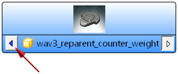
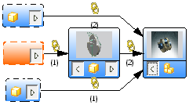
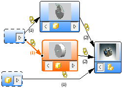
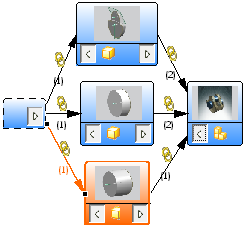

在浏览器中显示 WAVE 链接
-
点击装配工具条上的关系浏览
 。
。在关系选项卡的父级部件列中，注意链接体 (3)以及(4)的父级部件的名称。现在它们的父级部件名称显示为 wav3_reparent_counter_weight。
-
展开状态列。
注意链接体 (3)和(4)的状态为最新。
-
在部件间关系视图选项卡中，选择 wav3_reparent_design_assembly 节点。
提示
如果未显示 wav3_reparent_design_assembly 节点，在 wav3_reparent_counter_weight 节点上，点击显示第一级父对象 。

在刚开始这个练习的那一次打开关系浏览器时，没有显示设计装配，现在也有了平衡重的缩略图而主轴承和杆轴承并没有缩略图，并且也不显示它们到设计装配的链接。

-
右击主轴承节点，然后选择完全加载选定的部件。
当部件只是部分加载时，NX 关系浏览器将不会图形化显示部件缩略图，也不会显示它们可能含有的任何父级关系。

-
右击杆轴承节点并选择完全加载选定的部件。
既然已完全加载了所有的组件，注意到组件与设计装配间的 WAVE 链接都将图形化显示。

-
关闭 NX 关系浏览器。
-
关闭所有部件。